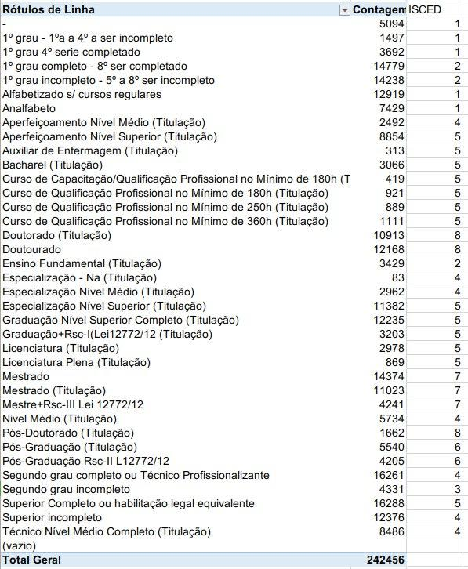

O Painel Estatístico de Pessoal (PEP) foi lançado em junho de 2017, sucedendo o antigo Boletim Estatístico de Pessoal (BEP), existente desde 1996. O PEP fornece mensalmente informações atualizadas de diversos orgãos da administração pública. É possível realizar consultas e cruzamentos, além de visualizações dos dados em gráficos, planilhas e mapas. O PEP pode ser acessado através do link: "http://www.planejamento.gov.br/assuntos/servidores/painel-estatistico-de-pessoal" ou clicando aqui.
O PEP passou a integrar o Painel Unificado como um complemento para as informações obtidas através do portal da transparência. Ambas utilizam o SIAPE como fonte de dados, entretanto, algumas variáveis essenciais não são fornecidas no portal da transparência. Atualmente, as variáveis recolhidas nesse sistema, todas por orgão, são:
O PEP não fornece um identificador único para os orgãos na base de dados e, portanto, a integração foi feita através dos nomes e siglas dos orgãos. Foram integradas dados mensais entre jan/2013 a nov/2019, por orgão.
A métrica "escolaridade", do PEP, foi utilizada para compor 2 variáveis no Painel Unificado: "escol_superior", referente ao total de servidores com nivel superior e "perc_escol_superior", que fornece o percentual dos servidores com nivel superior. Entretanto, o PEP não fornece as escolaridades em níveis superior, médio e fundamental. Do contrário, a escolaridade é desagregada e divida em 36 classificações.
A ISCED, International Standard Classification of Education, fornece uma abordagem para comparar diferentes niveis de educação em diferente sistemas educativos. Para tal, define oito níveis educacionais , que vão do nível 0, "educação pré-primária", ao nível 8, "Doutorado ou pesquisa avançada".
Para o Painel Unificado, foi definido como nível superior, todos aqueles níveis de escolaridade que se classifiquem como 5 ou superior, que de acordo com o ISCED(2011):
"Programmes classified at ISCED level 5 may be referred to in many ways, for example: (higher) technical education, community college education, technician or advanced/higher vocational training, associate degree."
"Programmes at ISCED level 5, or short-cycle tertiary education, are often designed to provide participants with professional knowledge, skills and competencies. Typically, they are practicallybased, occupationally-specific and prepare students to enter the labour market."
Na figura abaixo, o dicionário de dados classifica as escolaridades do PEP de acordo com a classificação da ISCED.
No total, 14 classificações de escolaridade do PEP foram definidas com os niveis educacionais de 5 à 8. O total de servidores dentro desses niveis, receberam a nomeclatura de "nível superior". O total de servidores com nível superior dá origem à variável "escol_superior" no Painel Unificado.
A variável "perc_escol_superior" é criada através da interação com os dados do portal da transparência. O número total de servidores com nivel superior, "escol_superior", em um dado orgão, é divido pelo total de servidores neste mesmo orgão, "qtde_servidores". O resultado é o percentual de servidores com nível superior em um dado orgão.
Por fim, a variável que mede a idade média de idade dos servidores de um dado orgão, "med_idade", não sofreu nenhuma alteração na integração ao Painel Unificado.